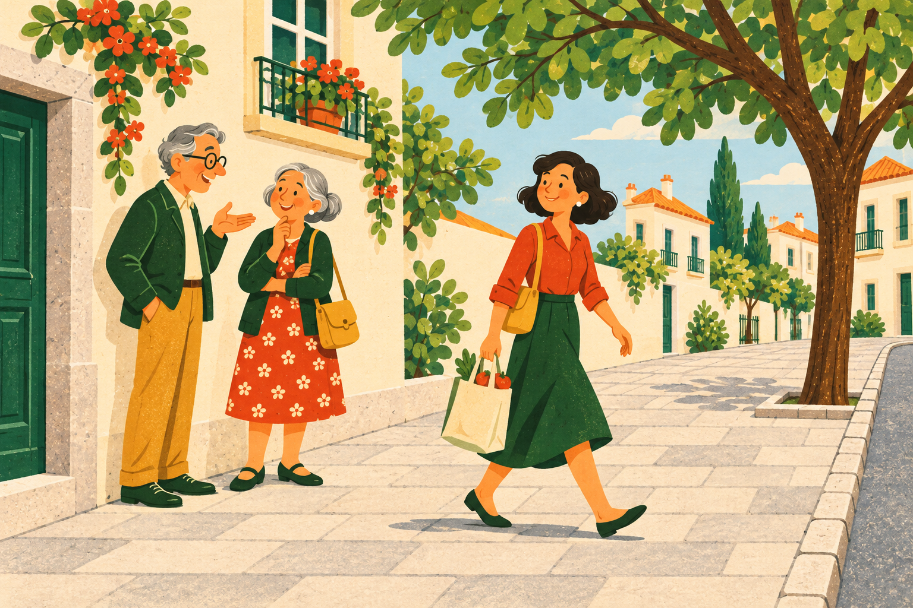

Na Rua
Há espaço para passar?
Estás a conversar com um amigo no passeio. Os dois ocupam a passagem. Uma pessoa aproxima-se e quer passar.
O que fazes?
Resultado
Certo.
Um pequeno movimento permite continuar a conversa sem bloquear ninguém.
Errado neste caso.
O passeio serve para caminhar. Não faz sentido obrigar alguém a sair dele.
Errado neste caso.
Ignorar mantém o obstáculo e deixa a outra pessoa à espera sem necessidade.
A solução comum às três escolhas
Basta encostar, libertar a passagem e deixar a pessoa passar. Podemos conversar e reparar em quem está à nossa volta.

Um pequeno gesto para experimentar
Olha à tua volta antes de parar num passeio.